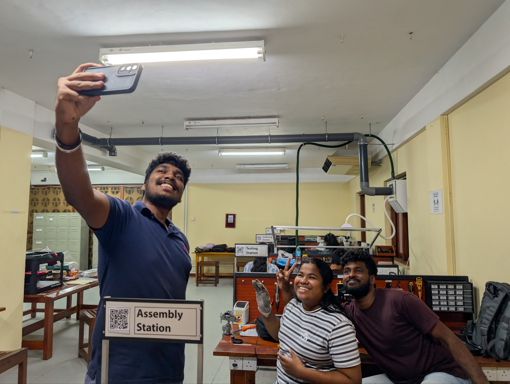
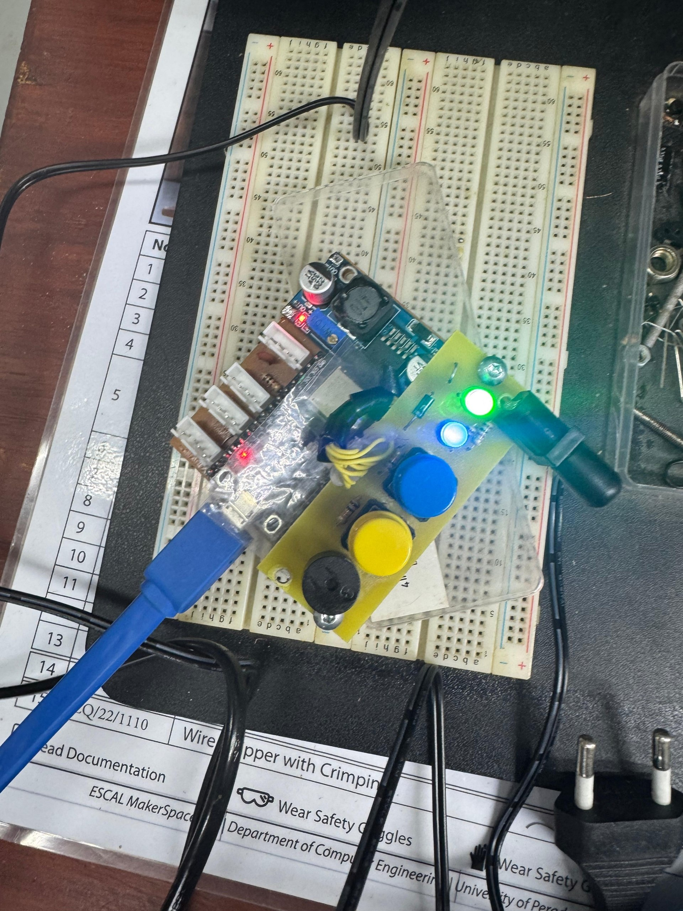
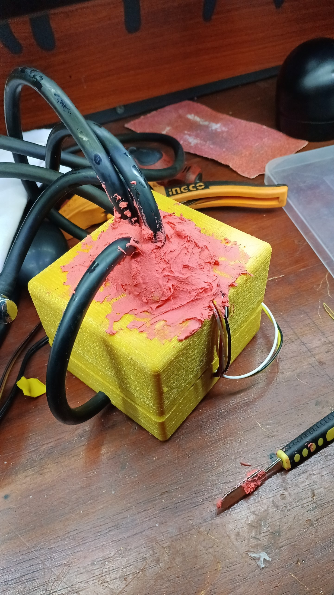

Prototype
Build mechanical and electronic versions early enough to reveal real constraints.
A multidisciplinary student project from the Department of Computer Engineering, Faculty of Engineering, University of Peradeniya.

The team developed ResQ through iterative prototyping, firmware and application integration, laboratory testing, stakeholder feedback, presentations, and competition demonstrations.
Profile links open the official Department of Computer Engineering people directory.
Project direction and feedback connect the engineering work to academic quality, training relevance, and practical execution.
ResQ required repeated movement between physical behavior, software evidence, and stakeholder communication.
Build mechanical and electronic versions early enough to reveal real constraints.
Turn sensing and device state into observable data instead of hidden behavior.
Test firmware, messaging, backend, persistence, and dashboards as one workflow.
Use reviews, presentations, visits, research, and competitions to improve the work.
Real project media captures the hands-on engineering behind the polished system views.




The repository contains the firmware, LocalHub, documentation, tests, release notes, and user manual behind this project.